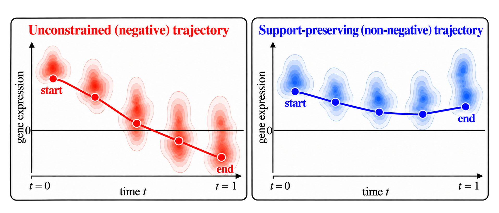
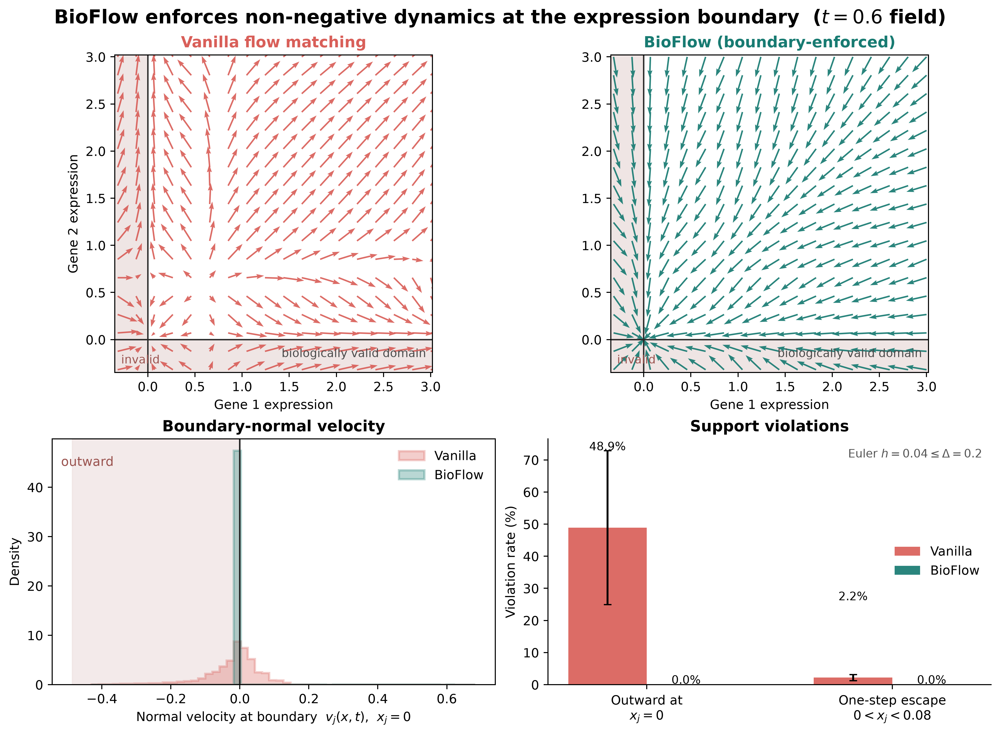
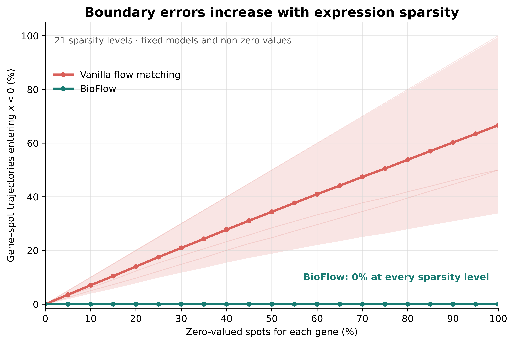
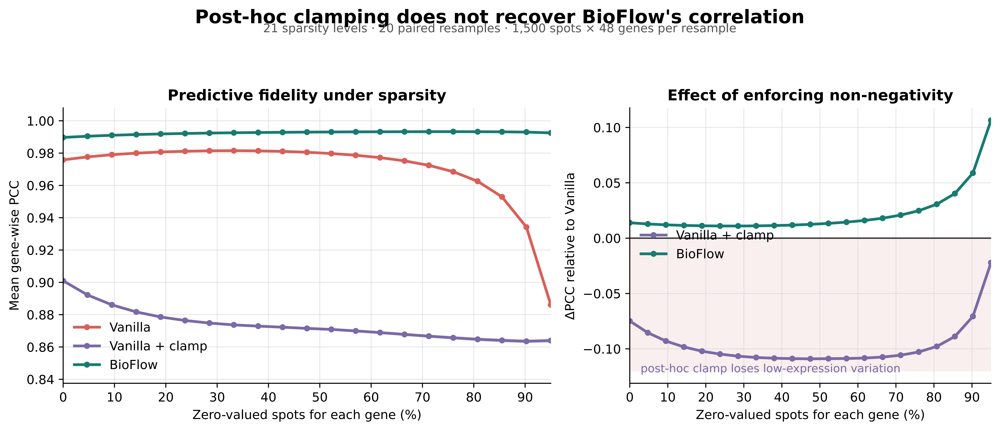
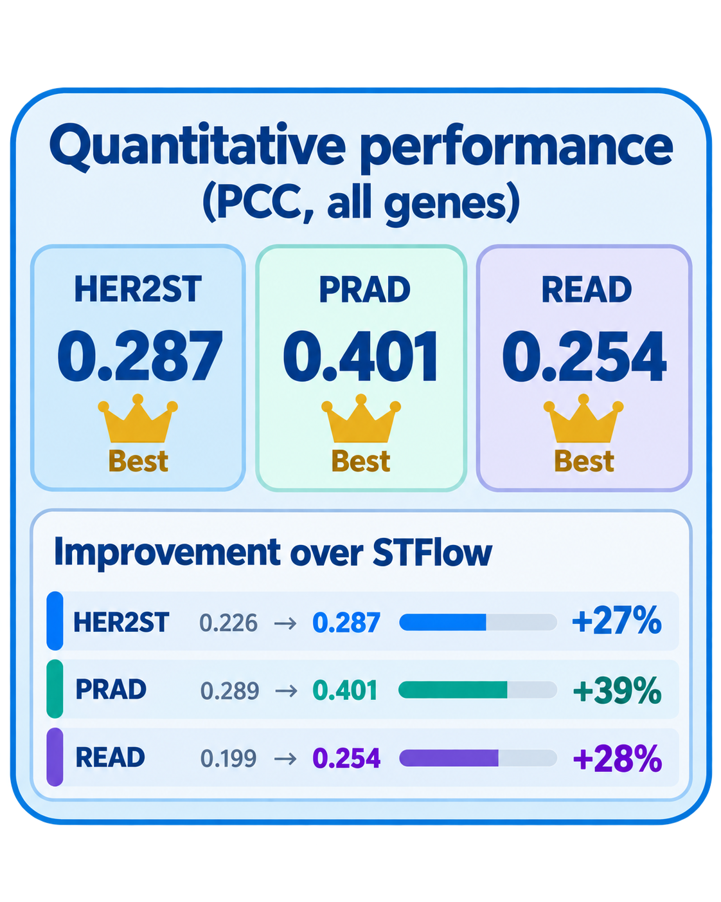
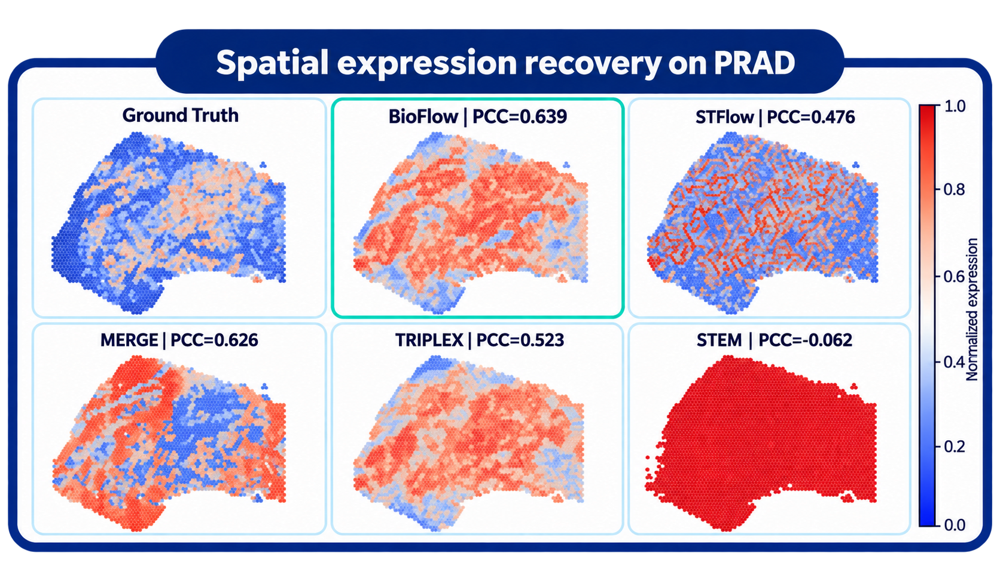
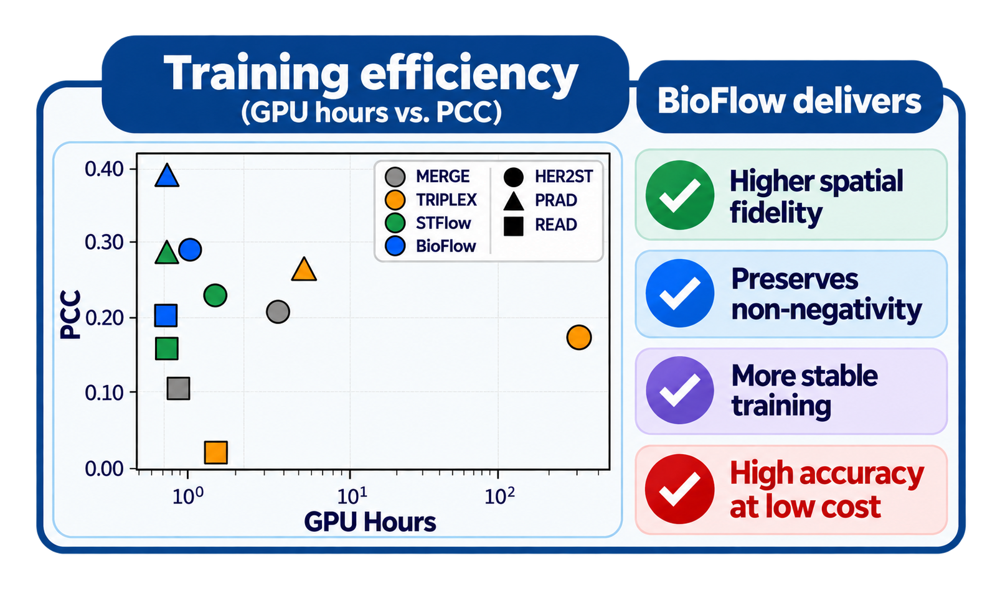

H&E patch
Local tissue morphology at each spatial spot.
A histology image contains clues about where genes are expressed—but expression itself is sparse, zero-inflated, and never negative.
Conventional flow models ignore that boundary. Their trajectories can pass through biologically impossible negative states.
BioFlow changes the vector field itself, so every step of generation remains inside the non-negative expression space.
Spatial transcriptomics maps gene activity back to tissue architecture, but measuring it remains expensive and technically demanding. BioFlow predicts those maps directly from routine H&E histology while respecting a constraint that ordinary generative models overlook: gene expression cannot fall below zero.
Histology-conditioned prediction asks a model to translate visual tissue morphology into thousands of gene-expression values at each spatial location. The data live in a sharply bounded space: many genes are exactly zero, and every remaining value is non-negative.
Standard flow matching learns an unconstrained velocity field in ordinary Euclidean space. It may arrive at a plausible final prediction while taking intermediate steps through negative expression. Those invalid states are not harmless—they distort the learned transport precisely where real spatial transcriptomics is most concentrated: near the zero boundary.

Non-negativity should be a property of the trajectory dynamics—not a correction applied after invalid states have already occurred.
BioFlow keeps the strong visual backbone of modern histology models, then changes the generative head. An H&E patch is encoded by a pathology foundation model; image tokens condition a transformer over noisy gene tokens and time. The final head predicts a support-preserving velocity rather than an unconstrained one.
Local tissue morphology at each spatial spot.
Pathology-aware visual tokens encode cellular context.
Noisy expression tokens are paired with a time embedding.
Cross-modal reasoning links morphology to expression.
A constrained velocity generates non-negative expression.
Standard flow matching regresses a vector field toward the conditional transport velocity. Nothing in this objective restricts the predicted direction to the biological domain.
An ordinary Euler step adds the learned velocity directly. If a zero-valued gene receives a negative component, the next state immediately leaves the valid support.
BioFlow decomposes velocity into a linear decay and a non-negative residual. Expression can decrease in the interior while the boundary remains inward-pointing.
The integrating-factor solution is a sum of non-negative terms whenever the initial state and residual are non-negative.
With 0 < h ≤ Δ, both coefficients in the Euler update are non-negative—so every numerical step remains biologically valid.
The poster’s diagnostic experiments isolate the mechanism before measuring downstream accuracy. Each test asks the same question at a different scale: what happens near zero when the vector field is allowed to point out of the valid domain?
The poster’s opening illustration makes the structural difference visible before any metric is introduced.
Vanilla flow often points outward at the expression boundary. BioFlow’s field is inward-pointing by construction, eliminating one-step escape.
Starting exactly at zero, vanilla trajectories repeatedly enter negative territory. BioFlow remains non-negative over the entire evolution.
As zero inflation rises, boundary errors grow for the unconstrained model. BioFlow’s violation rate remains at zero.
Clipping the endpoint removes negative numbers, but it does not recover the spatial correlation lost while the model evolved through invalid states.




Across HER2ST, PRAD, and READ, BioFlow improves spatial correlation while preserving recognizable expression patterns and training far faster than iterative diffusion baselines. The poster’s final row brings accuracy, spatial fidelity, and efficiency together.



BioFlow does not ask a generic generator to become valid after the fact. It turns non-negativity into a property of the transport itself. That small change in the vector field produces a coherent chain of consequences: valid boundary behavior, stable zero-gene trajectories, better spatial structure, and stronger predictions from routine histology.